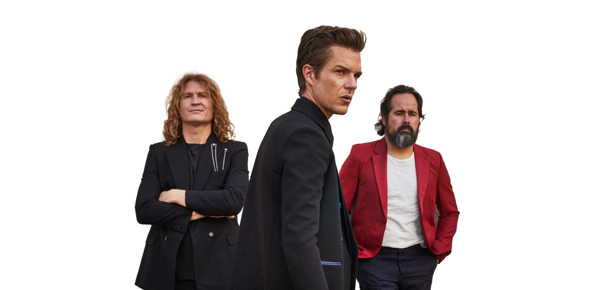

The Killers sind eine amerikanische Rockband und bringen genau diese Art von Energie auf die Bühne, die ein Festival in einen kollektiven Ausnahmezustand verwandelt: grosse Melodien, treibende Drums und Refrains, die man schon nach den ersten Sekunden mit voller Stimme mitsingt.
Live auf dem Festival
22. August 2026 · 19:30–20:30 Uhr